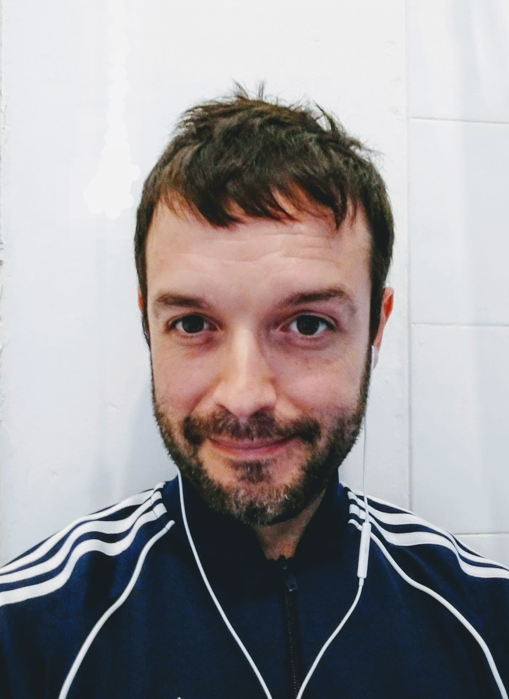

👋 Hi there!
I’m a mobility researcher and consultant with a diverse background. I’ve studied Law, Environmental Management, Transport Planning, and Data Analysis, and I’ve worked in both academia and industry.
Right now, I’m a Postdoctoral Researcher at GEMOTT (the Research Group in Mobility, Transport, and Territory) in the Department of Geography at the Autonomous University of Barcelona.
This site is where I share my projects, presentations, and ideas.
Feel free to explore my profiles on different platforms, and you can contact me at: eugeni [dot] vidal [at] hotmail [dot] com.